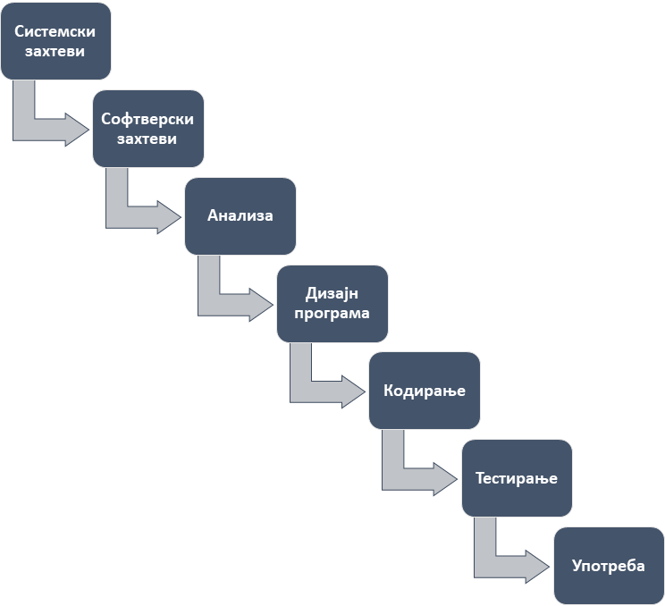

Животни циклус развоја софтвера¶
Процес представља скуп активности које се извршавају да би се добио одређени резултат. У оквиру наставног предмета Програмирање бавићеш се процесом који представља скуп активности које се извршавају приликом развоја софтвера. Овај процес назива се животним циклусом развоја софтвера (енгл. SDLC - Software Development Life Cycle).
Када су информационе технологије почеле да се развијају, са мало планирања, програмер је самостално могао да произведе функционалан софтвер. Како су захтеви корисника софтвера расли, а софтвер постајао све сложенији, на његовој изради и доради морало је радити више програмера истовремено.
Због тога су осмишљене методологије развоја софтвера које се баве организацијом рада тима, груписањем активности, доношењем правила, креирањем шаблона итд. Методологијама животног циклуса развоја софтвера бави се дисциплина софтверског инжењерства.
Модел водопада¶
Једна од првих методологија развоја софтвера представљена је моделом водопада (енгл. Waterfall Model). Иако је модел водопада дефинисан 1970. године, њега можеш применити и данас на једноставним задацима. Модел је дефинисан кроз седам фаза, где се са једне фазе прелази на другу, тек када је фаза у потпуности завршена.
Системски захтеви. У првој фази требаш одговорити на следећа питања: која је платформа на којој ће се програм извршавати; која се хардверска архитектура користи; који се оперативни систем користи; да ли је неопходан неки додатан софтвер?
Софтверски захтеви. У другој фази требаш одговорити на следећа питања: шта софтвер треба да ради, у којој су форми улазни подаци, а у којој резултати; која су и каква су ограничења?
Анализа: У трећој фази проблем требаш раставити на целине и израдити алгоритам (идејно решење) којим ћеш описати поступак за решавање дефинисаног задатка.
Дизајн програма. У четвртој фази требаш осмислити кориснички интерфејс и како корисничке акције утичу на извршавање програма.
Кодирање. Тек када си завршио са претходним фазама, долази до пете фазе - уноса изворног програма, дебаговања и превођења у извршни програм.
Тестирање. У шестој фази требаш тестирати све функције програма и израдити програмску документацију.
Употреба. У седмој фази требаш осмислити како ћеш корисницима испоручити и инсталирати програм и како ћеш током оперативног коришћења програма од стране корисника исти одржавати.
Како се развија једноставна апликација?¶
Иако вероватно не знаш да програмираш, покушај да размислиш како би фазе модела водопада применио на неком једноставном случају, на пример, на пројекту израде апликације за сабирање бројева.
{kind=link}
Системски захтеви¶
Апликација треба да се извршава на IBM PC компатибилном рачунару, у конзоли 64-битног оперативног система Windows 10 или 11. Пошто развијаш конзолну апликацију у програмском језику C, није ти неопходан никакав додатни софтвер за њено извршавање. За развој ове апликације користићеш интегрисано развојно окружење Microsoft Visual Studio са Microsoft C/C++ компајлером.
Софтверски захтеви¶
Јасно је да је корисник наручио апликацију за сабирање бројева, али није прецизно дефинисао:
да ли се мисли само на целе бројеве или то могу бити и реални бројеви;
ако су у питању реални бројеви, на колико децимала програм треба да заокружи разломљени део броја;
да ли бројеви могу бити и позитивни и негативни;
колики је дозвољени опсег бројева, односно, који је најмањи, а који највећи број који корисник може да унесе;
да ли су то бројеви у декадном бројевном систему или се очекује да апликација подржава и рад са бројевима у другим бројевним системима?
Нека је корисник одлучио да је у питању апликација за сабирање реалних бројева у декадном бројевном систему и да, ако у резултату има децимала, онда их треба заокружити на пет децималних места.
Анализа¶
Алгоритам за израду ове апликације може бити прилично једноставан. Од корисника се очекује да унесе два реална броја, након чега се у програму врши сабирање унетих бројева и исписује резултат на излазу. Ако резултат није цео број онда се исписује са пет децимала, а ако јесте, исписује се без децимала. Треба водити рачуна о томе да корисник може да погреши и унесе податак другог типа, на пример да унесе слово уместо цифре, па у алгоритам треба уградити и проверу исправности унетих података како не би дошло до „пуцања” програма.
Дизајн програма¶
Кориснички интерфејс за ову апликацију такође може бити једноставан. По покретању апликације на екрану се исписује текст Unesi prvi broj:, па се у програму проверава и памти унос корисника. У новој линији исписује се текст Unesi drugi broj:, па се поново у програму проверава и памти унос корисника. Сабирају се две запамћене вредности и исписује резултат у новој линији Rezultat sabiranja unetih brojeva je:…, након чега се прекида извршавање апликације. У случају погрешног уноса, исписује се порука Pogresan unos! и прекида се извршавање апликације.
Кодирање¶
Тек сада када је све јасно може се започети са уносом програмског кода и израдом апликације. Током уноса програмског кода треба уносити и коментаре који описују шта одређени делови кода раде, како би у будућности ти или неки други програмер могли да вршите исправке тог кода.
Тестирање¶
Пре него што готову апликацију испоручиш кориснику било би добро да је тестираш на различитим рачунарима и покушаш да је „срушиш” са погрешним уносима. Поред апликације кориснику требаш испоручити и упутство за коришћење, па након успешног тестирања следи израда програмске документације.
Употреба¶
Неретко будући корисник не живи у истом месту, држави или на истом континенту, па требаш осмислити како да апликацију кориснику испоручиш путем интернета. Ако корисник ипак открије неку грешку или жели проширење функционалности, требаш осмислити механизме за ажурирање апликације.
Развој нових модела и методологија¶
Из дате вежбе могао си да закључиш колико може да буде комплексан и најмањи задатак за израду јако једноставне апликације, од дефинисања захтева корисника, преко алгоритамског решавања проблема, дизајна програма, кодирања и тестирања, до употребе и одржавања апликације. Замисли колико би био велик задатак да направиш комплетан информациони систем једне компаније, макар то била и мала компанија са само неколико запослених!
Како су компаније увиделе предности дигитализације пословања и почеле масовно да набављају рачунаре, тако је и посао програмера постајао све сложенији. У неком тренутку модел водопада више није био ефикасан јер су након уочавања проблема у одређеној фази, програмери морали да се враћају на претходне фазе.
То је условило да се развију напредније методологије као што су:
методологија за рапидни развој,
методологија за развој вођен тестовима,
методологије за агилни развој (скрам, адаптивни развој, развој вођен карактеристикама, динамички развој, екстремно програмирање), и др.
Као што је поменуто на почетку, ове напредне методологије предмет су академске дисциплине софтверског инжењерства - изучавају се на факултетима и високим школама и примењују у компанијама са више запослених програмера који тимски раде на већим пројектима.